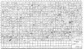
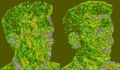

| home | projects | opinions | contact |
| ray lc : opinions : quizbowl |
|
Packet Archive. It calls Tristram Shandy a homunculus and asks whether spin-spin coupling is geminal or vicinal. Claiming that Jacques Lacan thinks with his feet, FTP name this set of questions written by yours truly. | |
|  |
Tournament Stats.
"No depth, no digging underneath, has the talent but doesn't dare, afraid to meet himself somewhere... trying not to discover what sex [he] belong[s] to." |
|
UCLA College Bowl.
"Why faintest thou! I wander'd till I died / Roam on! The light we sought is shining still. / Dost thou ask proof? Our tree yet crowns the hill..." | |
|  |
Philosophy. Noting the correlation between language structure and conceptual logic, Ludwig Wittgenstein declared the end of philosophy and heralded the scientific analysis of language and communication. |
|
History. A timid soul and sincere friend, Henry Adams gave his voice to an age of spirituality overwhelmed by science, reminiscing on a past both humane and cruel in Mont-St. Michel and Chartres and The Education. |
| up | top |